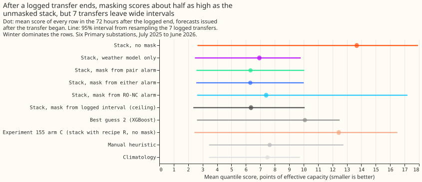
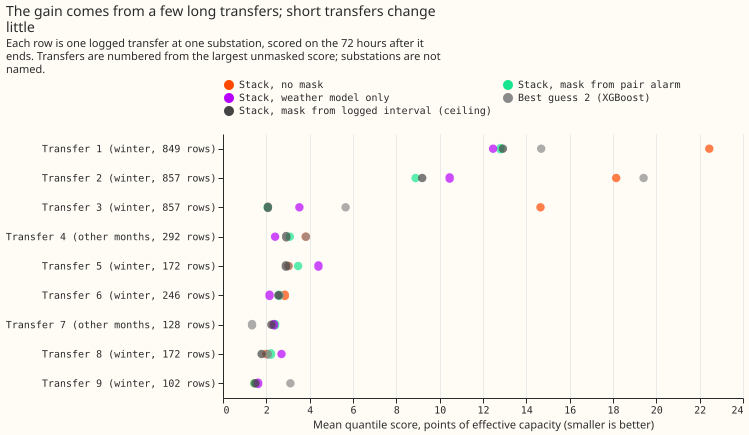
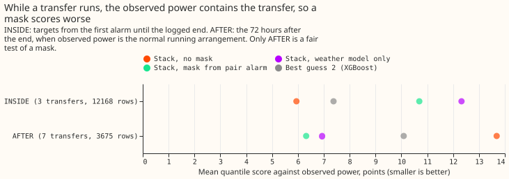
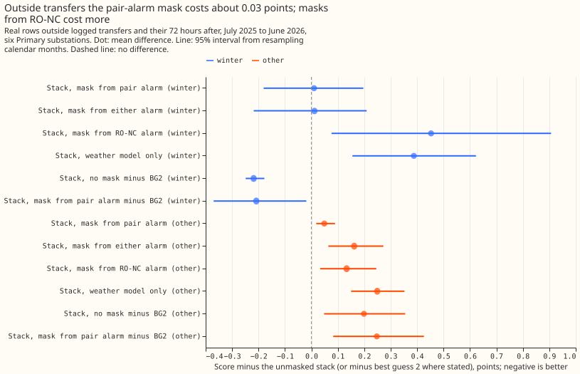

Real logged load transfers: the XGBoost-free stack with a load-shift mask against best guess 2
After a real load transfer ends, a forecast that sets the power readings of the transfer period missing, or that ignores recent power, has an error score about 40% lower than best guess 2 and about 54% lower than the same forecast with no mask. The scores are 6.32 for the pair-alarm mask, 10.09 for best guess 2 (an XGBoost forecast that uses recent power), and 13.69 for the unmasked forecast, in points of a substation's effective capacity (lower is better). The effect rests on 7 logged transfers at four of the six decision Primary substations in the scored year. Three transfer-substation pairs, from two long December-to-January transfers, carry 31.1 of the 39.3 points of gap, the intervals are wide, and the pair alarm found 5 of the 7 pairs whose gap exceeds 0.25 points. Over the year, the masked forecast and best guess 2 are indistinguishable on ordinary days. The next experiment needs more logged transfers, or a forecast that drops recent power whenever the pair alarm or the refit-offset neighbour-count detector (RO-NC) is active.
We asked how two forecasts cope with real transfers of load between substations that the network operator logged. The stack is a weather-driven generalised additive model (GAM) with a Kalman filter on its recent errors, and it sets the readings missing from the moment an alarm is known. The alarm is the pair alarm of experiment 156 (two metered substations step in opposite directions within hours), with the end rule of experiment 148. Best guess 2 (BG2) is the XGBoost forecast of experiment 87, which takes recent power as an input. The stack and BG2 were both scored on the same rows, in points of a substation's effective capacity (twice the mean pinball loss over 11 quantiles; smaller is better).
By the pre-registered rule the verdict is partly supported. The gap test (C3) passes: the
share of the gap to the logged-interval mask (the oracle mask) that the pair-alarm mask closes is
100% on the pooled rows, above the 40% required. The no-harm test (C4) fails by 0.005 points: the
pair-alarm mask minus the unmasked stack on ordinary rows is +0.033 points, and the upper end of its
95% interval, +0.105, is above the required +0.10. The pre-registered rule did not say whether the
40% applies to the point estimate or to the lower interval end. The lower end, 12%, is under 40%, so
the pass rests on the point estimate. The comparison with BG2 carried no threshold.




- Arms. STACK-K0 (the stack, no mask), STACK-NEW (mask from the pair alarm), STACK-UNION (mask from either the pair alarm or the refit-offset neighbour-count detector, RO-NC), STACK-RONC (mask from RO-NC alone), GAM-ONLY (no correction from recent power), ORACLE (the logged interval masked from its logged onset, its end known at once), BG2, experiment 155's arm C (the unmasked stack with recipe R, which subtracts 0.75 times the error of the last 14 days by half-hour of day, on the base of experiment 136), the manual heuristic, and climatology. The stack arms share the K0 spread of experiment 115 (the forecast's width, fitted once), so they differ in location only. Arm C is not masked, because the masked filter is the experiment 156 stack, which has no recipe R.
- Rows. The scored year (2025-07-02 to 2026-06-30), six decision Primaries (D5, D10, D11, D14, D16, D9), rows with a reading that the stack and BG2 share: 572,541. The no-harm rows are 556,930 of them, outside the logged transfers and their 72 hours after and outside the hand-filtered switching events. The scored year holds 7 logged transfers that involve a decision Primary (13 transfer-substation pairs with rows after the logged end, counting the replicate months, the even months of 2024-07 to 2025-06). Weather in the filter's residual is the analysis proxy, as in experiments 141 and 156; the member forecasts are the ensemble of experiment 111.
- Row sets, fixed before any score. By target time, with the forecast origin at or after the logged onset: BEFORE (until either alarm is known), INSIDE (alarm to logged end), AFTER (72 hours after the logged end). Only AFTER is scored against a series free of the transfer. BEFORE has 11 shared rows at 1 transfer, so it cannot be read; INSIDE has 3 transfers.
- AFTER, absolute scores (7 transfers, 3,675 rows; winter 5 transfers, 3,255 rows). STACK-K0 13.69, GAM-ONLY 6.94, STACK-NEW 6.32, STACK-UNION 6.31, STACK-RONC 7.41, ORACLE 6.35, BG2 10.09, arm C 12.44, manual heuristic 7.65, climatology 7.49. Winter: K0 15.02, STACK-NEW 6.77, BG2 11.00. Other months (2 transfers, 420 rows): K0 3.37, STACK-NEW 2.88, BG2 3.07, climatology 2.42.
- C1 and C2, minus BG2 on AFTER (95%, resampling the 7 transfers). STACK-NEW -3.77 (-6.01 to +0.02); STACK-UNION -3.79 (-6.01 to +0.00); STACK-K0 +3.59 (-0.08 to +5.70); GAM-ONLY -3.16 (-4.76 to +0.10); arm C +2.35 (-0.28 to +4.53). Leaving out one substation: D5 out -1.85 (-3.07 to +0.19), D14 out -4.57 (-6.76 to -0.15), the sign holds at every substation.
- C3, share of the gap from STACK-K0 to ORACLE closed on AFTER (9 transfer-substation pairs). STACK-NEW 100% (95% 12% to 101%), STACK-UNION 101% (17% to 101.5%), STACK-RONC 86% (-21% to 126%), GAM-ONLY 92% (-5% to 112%), BG2 50% (21% to 84%), arm C 17% (15% to 78%). Per pair (7 pairs with a gap over 0.25 points, two of them from replicate months, for which BG2 has no rows): STACK-NEW median 89%, range -61% to 103%; STACK-UNION median 98%; STACK-RONC median 0%; BG2 median 72% over its 5 pairs. The three December-to-January pairs, from two transfers, carry the pooled shares.
- Alarms. Of the 7 transfer-substation pairs whose gap exceeds 0.25 points (two from replicate months), the pair alarm found 5 and RO-NC found 4. An alarm that matches no logged transfer still masks, as in a live service.
- INSIDE (3 transfers, 12,168 rows), against observed power that contains the transfer. STACK-K0 5.94, BG2 7.38, STACK-NEW 10.69, GAM-ONLY 12.33. A forecast of the normal running arrangement is expected to miss the moved power, so this row set cannot rank the arms.
- C4 and C5, no harm on 556,930 ordinary rows (95%, resampling calendar months). Scores: STACK-K0 2.725, STACK-NEW 2.759, STACK-UNION 2.827, STACK-RONC 2.986, GAM-ONLY 3.030, BG2 2.693, arm C 2.666, manual heuristic 3.391, climatology 3.654. STACK-NEW minus STACK-K0 +0.033 (-0.043 to +0.105); STACK-UNION +0.102 (-0.013 to +0.207); STACK-RONC +0.261 (+0.093 to +0.484); GAM-ONLY +0.304 (+0.192 to +0.431). STACK-NEW minus BG2 +0.066 (-0.109 to +0.245); STACK-K0 minus BG2 +0.033 (-0.112 to +0.185). Winter: STACK-NEW minus BG2 -0.208 (-0.370 to -0.019); other months +0.248 (+0.083 to +0.426).
- Tail calibration (share of readings at or below the quantile; pinball loss in points), ordinary rows. STACK-NEW: q01 0.0145 (0.188), q05 0.052 (0.685), q95 0.956 (0.712), q99 0.988 (0.203). BG2: 0.0097 (0.208), 0.041 (0.617), 0.945 (0.739), 0.983 (0.249). After a transfer ends (7 transfers), STACK-NEW covers 0.175, 0.231, 0.835, and 0.898 at the four quantiles, and BG2 0.0035, 0.323, 0.745, and 0.842, so both forecasts are far too confident in the days after a transfer. The node-plus-generators curtailment metric is not scored here, because the experiment forecasts six Primaries alone.
- Predictions against outcome. The unmasked stack and BG2 were predicted to score 4 to 12 on AFTER; the stack scored 13.69 (above the range), BG2 10.09. The pair-alarm mask was predicted to close 20% to 60% of the gap and the union 40% to 75%; both closed about 100% pooled (89% and 98% per-transfer median), above the ranges. BG2 was predicted to close 0% to 50%: 50%. The predicted agreement of all arms before the alarm could not be tested (1 transfer). No harm on ordinary rows was predicted within 0.10: +0.033 for STACK-NEW.
The mask does not clearly beat ignoring recent power. The comparison is with GAM-ONLY: STACK-NEW minus GAM-ONLY on AFTER is -0.62 (95% -1.28 to +0.40) and STACK-UNION minus GAM-ONLY is -0.63 (-1.28 to +0.38). GAM-ONLY closes 92% of the gap to ORACLE with no alarm, so most of the "gap closed" is the gain from not reading the contaminated power, and the alarm adds a little on top. The mask's gain over GAM-ONLY cannot be told from zero here.
Checks
- Median minus mean forecast by substation, identical for every stack arm: D10 -0.064, D11 -0.027, D14 +0.034, D16 +0.014, D5 -0.136, D9 -0.021 points of capacity.
- Error of the median forecast beside the quantile contrast, AFTER, shared rows: STACK-K0 18.23, GAM-ONLY 10.73, STACK-NEW 9.64, STACK-UNION 9.62, BG2 15.47 points, the same order as the quantile score.
- Triggers. Trigger 2 fired: the pooled gap shares (about 100%) sit above the predicted ranges. The tested explanation is concentration: the three December-to-January pairs hold 31.1 of the 39.3 points of gap, and the per-transfer median share is 89% with a range of -61% to 103%, so the pooled figure is not typical. Trigger 5 fired: GAM-ONLY or a mask beats ORACLE at 6 of 7 pairs, so the logged interval is not a ceiling; the logged onset is later than the step in the telemetry at the first December transfer (the pair alarm's step in experiment 156's alarm table is 13 hours before the logged onset). Trigger 4 (leaving one substation out flips a contrast) did not fire: the sign of the pair-alarm contrast with BG2 holds when each substation is left out. Triggers 1 (a failed control), 3 (quantile score and error of the median forecast disagree), 6 (interval width against a sister experiment), and 7 (a later design depends on this result) did not fire.
Caveats
- Four substations, not six. D9 and D11 hold no logged transfer in the scored year, so the comparison with BG2 rests on D5, D10, D14, and D16. Leaving D5 out shrinks C1 from -3.77 to -1.85.
- Row sets include rows issued before the alarm was usable. INSIDE and AFTER rows need only a forecast origin at or after the logged onset, so for some rows the mask is not yet on while ORACLE is, which dilutes the share of the gap closed. The 4 transfers of the replicate months (even months of 2024-07 to 2025-06) appear only in stack-only numbers, which no verdict uses, and BG2 has no rows there.
- Seven transfers. The scored year holds 7 logged transfers at the decision Primaries, and BG2 exists only there; BG2 comparisons rest on those 7. The stack-only rows add 4 transfers from the replicate months and move no conclusion.
- Lab conditions for the stack. The filter's residual uses the analysis proxy (a stand-in for the weather at the forecast origin, built from the weather model's analysis fields), but the alarm tables are experiment 156's, tuned on odd months of the real stream.
- The logged interval is imperfect. The share closed can exceed 100%, and the ORACLE arm is not a floor.
- Past weather. The proxy is built from past weather available at the origin; no future weather enters the filter.
What the next experiment should answer
The next question is whether a forecast that drops recent power while the pair alarm or RO-NC is active (the GAM-ONLY arm switched on by an alarm), and otherwise uses it, beats both the stack and BG2 across all rows. GAM-ONLY scored 6.94 after a transfer and 3.03 on ordinary days (K0 2.73), so the alarm decides between the two. More logged transfers would also let the BG2 comparison rank the forecasts.